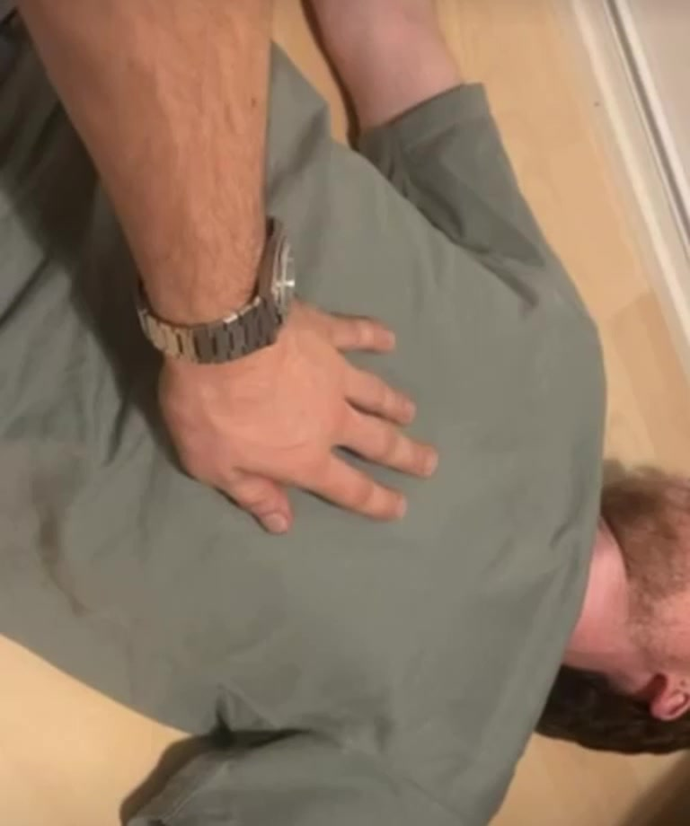
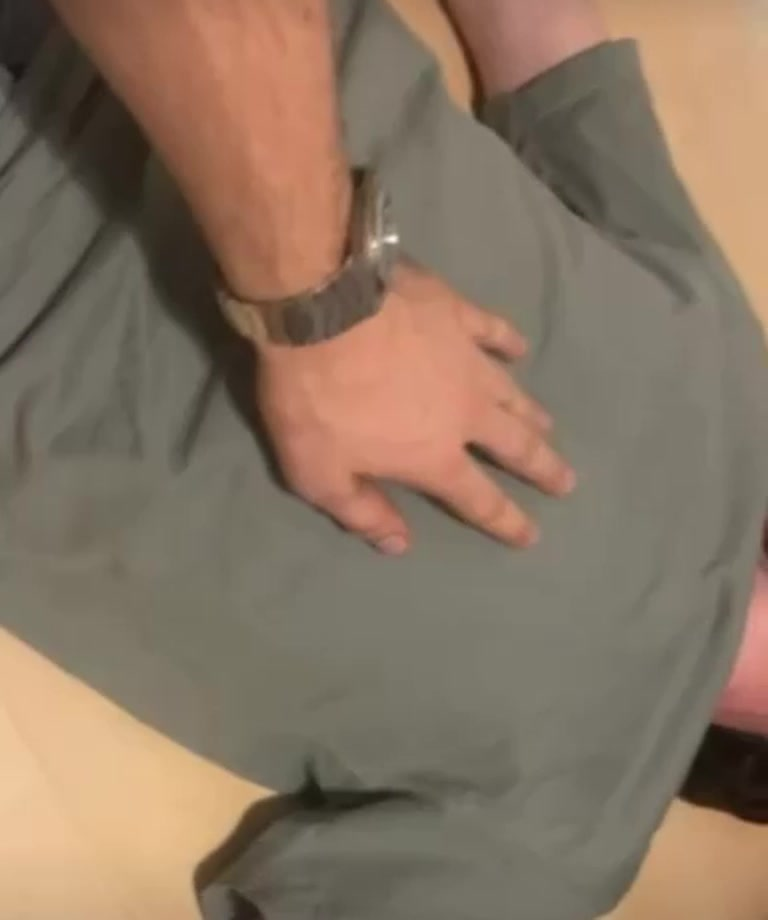
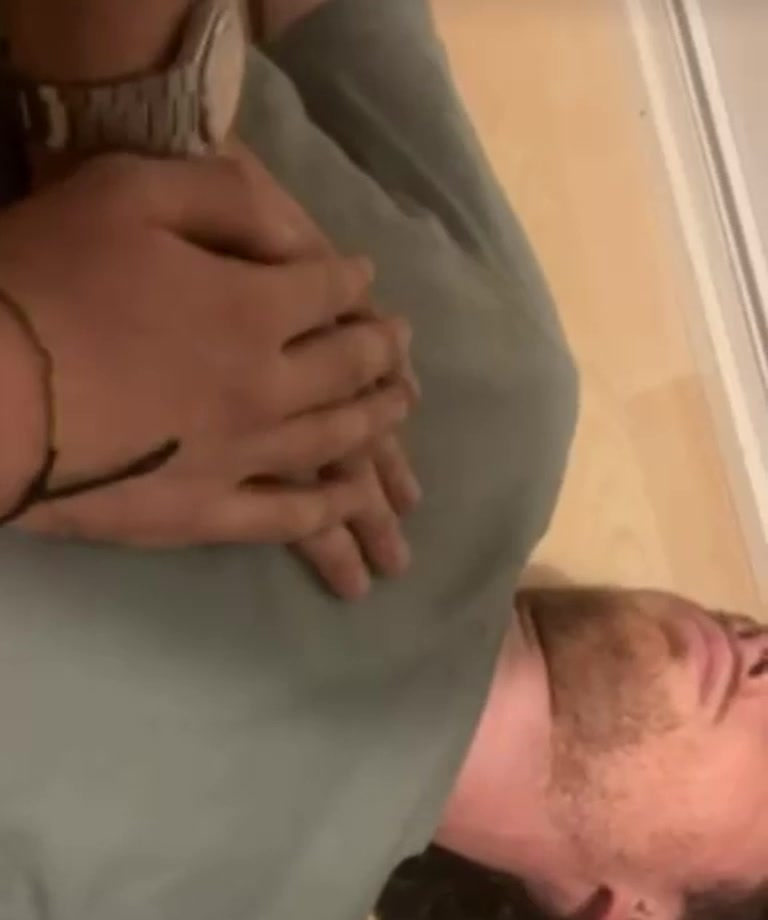

Every day, people face emergencies they were never trained for.
A fire.
A flood.
A deep cut.
A heart that stops.
A man collapses.
His heart has stopped.
−10%
chance of survival, every minute without CPR
Source: American Heart Association
The person next to him wants to help.
But has never done this before.
Voice only.
The dispatcher can't see a thing.
FirstFive
Emergency guidance through AI glasses
Incoming emergency00:03
Answer call
Live · witness view
First-person view from the glasses
The dispatcher sees what the witness sees.
Guided, step by step.
1Responsive?
2Breathing normally?
3CPR · 110/min
110 beats / min
Hands stay on the chest.
● On call01:12
Dispatcher · speaking

Live · witness view
Lower
Dispatcher
“Move your hands lower. Lock your elbows.”
Real-time correction, because they can see.
Any emergency.
Live in the prototype: cardiac arrest.
Same guidance, more protocols.
1Cardiac arrestPush hard and fast, on the beat
2Severe bleedingPress firmly on the wound
3ChokingFive firm blows between the shoulders
4EarthquakeDrop, cover, hold on
5TsunamiMove to high ground, now
Incident report
Suspected cardiac arrest · CPR guided
Simulation
+0:12Not responding
+0:24Not breathing
+0:31CPR started
+0:58Dispatcher on call
Ready before the ambulance is.
Recording only during an emergency.
Built on Meta's Device Access Toolkit.
×2
Bystander CPR can more than double survival.
In any emergency,
FirstFive makes sure help starts in time.
Sources: Harvard Health Publishing, American Heart Association
FirstFive
Any emergency. The first five minutes, together.
Live demo →